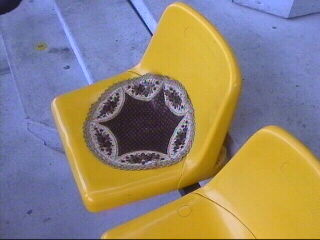

|
Roda JC - RKC (1-0) 28 april 2002 |
Door weer en wind naar de laatste thuiswedstrijd.
Het NFCL-comité hield een enquête met de vraag
"Bent u voor een behoud van Roda JC desnoods
zonder Nol Hendriks?" Zelfs bij Bufkes werd deze
ondertekend.
Omdat Roda een toiletrol-actie wilde houden werd
er gereageerd met dit spandoek:
Wij schijten op FC Limburg! RJC 4-ever!

Gedurende de eerste helft bleven de echte fans
van Roda stilzitten en maakten geen geluid.
Deze provocateurs probeerden de actie te
verzieken.
Deze l#l deed daar nog een schepje boven op.
De traditioneel kleine RKC aanhang.
Berglund tegen de vlakte in een wedstrijd waarin
RKC weinig tegen Roda had in te brengen.
Zowaar vuurwerk.
In de tweede helft gingen de echte Roda-fans weer
achter de club staan.
De sfeer steeg meteen.
Kanonschot Tomasic raakt slechts de boarding.
Maar hier gaat hij WEL scoren (88).
Invaller Van der Luer met een magistrale vrije
trap die het doel ternauwernood mist.
Na afloop van de wedstrijd wordt er afscheid
genomen van Garba Lawal.
En Igor Tomasic.
En Joep.
Een gezapig afscheid van het thuispubliek.

Hier zat een zitvleeszombie met een voorschot
op FC Limburg.

Actie "aan de rol" in schoonheid gestorven.
Twee notabele heren. Van een is het al zeker dat
hij de club verlaat.....
Graag gedaan!
Twee sympathieke gasten, Kevin en Humphrey.

Deze zagen we pas op de terugweg. Nee we zijn
niet pertinent tegen dhr. Hendriks, wij zijn slechts
tegen FC Limburg.
Tot slot van deze reportage een blik op de bouw
aan de oostzijde.
©KPD